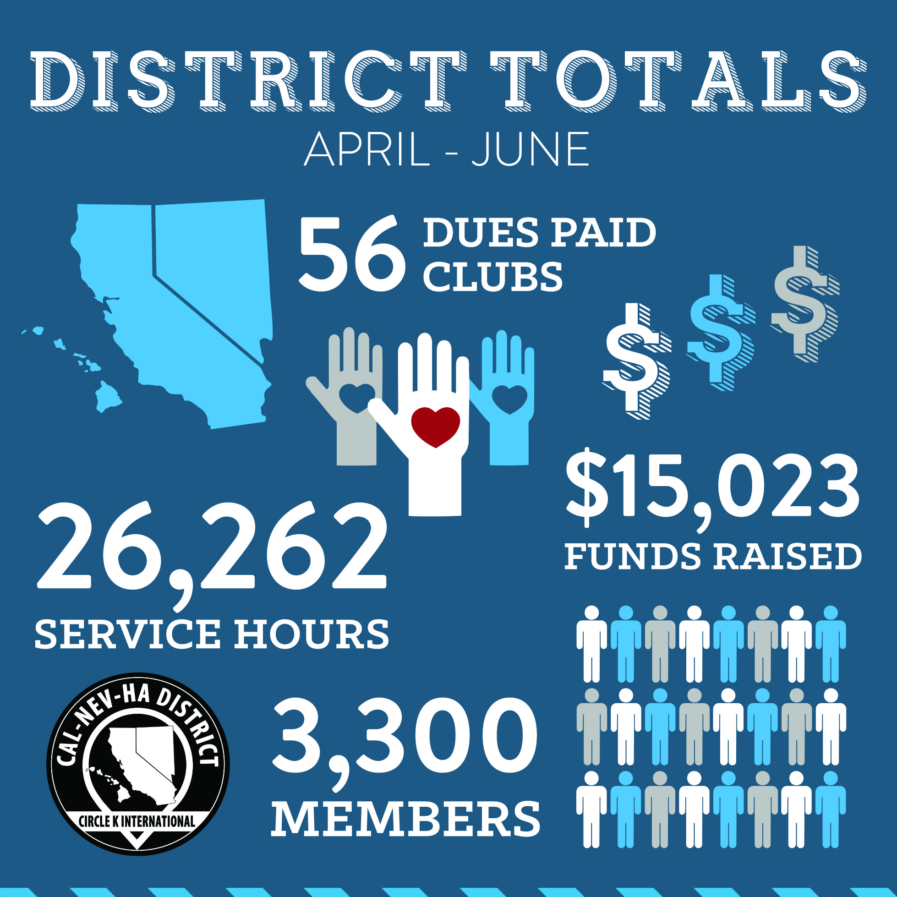

Totals Infographic
This infographic was used to show hour totals, funds raised, and membership for the Circle K International CNH District.

Fall Training Conference
I created this infographic to show the various activities that would be offered to attendees at the annual CNH Circle K Fall Training Conference.
DSI Fun Fact
This was made as a series of short infographics for CNH Circle K's Service Week.
Sunburst Submission Graphic
I designed this graphic to post on social media to remind members to submit articles to the District Newsletter.
Kiwanis Family Structure
This infographic was used in a newsletter to explain the structure of the Kiwanis Family.